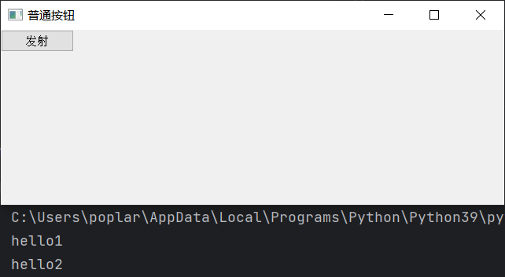

<!DOCTYPE lake>
<p data-lake-id="u75946439" id="u75946439"><a data-lake-id="ub1b33b75" href="https://doc.qt.io/qt-5/classes.html" id="ub1b33b75" rel="noopener noreferrer" target="_blank"><span data-lake-id="u502dd471" id="u502dd471">https://doc.qt.io/qt-5/classes.html</span></a></p><h2 data-lake-id="huSNZ" data-lake-index-type="2" id="huSNZ"><span data-lake-id="u9a6a7057" id="u9a6a7057">信号和槽简介</span></h2><p data-lake-id="ufb5f0470" id="ufb5f0470"><span data-lake-id="u3bc38779" id="u3bc38779">signal信号和slot槽机制是 QT 的核心机制，应用于对象之间的通信</span></p><ul list="u4ac2d25d"><li data-lake-id="u57de98be" fid="u6d89b455" id="u57de98be"><span data-lake-id="u67dfbff6" id="u67dfbff6">信号和槽是用来在对象间传递数据的方法</span></li><li data-lake-id="uaccaf4e9" fid="u6d89b455" id="uaccaf4e9"><span data-lake-id="u8bf80826" id="u8bf80826">当一个特定事件发生的时候，</span><code data-lake-id="u58d9ec23" id="u58d9ec23"><span data-lake-id="u3986d81f" id="u3986d81f">signal</span></code><span data-lake-id="uda650e4e" id="uda650e4e">会被</span><code data-lake-id="uf0888496" id="uf0888496"><span data-lake-id="u19ee2d98" id="u19ee2d98">emit</span></code><span data-lake-id="u1dda03f7" id="u1dda03f7">出来，</span><code data-lake-id="u9af365a5" id="u9af365a5"><span data-lake-id="u7b82c32c" id="u7b82c32c">slot</span></code><span data-lake-id="u7d1338da" id="u7d1338da">调用是用来响应相应的</span><code data-lake-id="u7c3b86ed" id="u7c3b86ed"><span data-lake-id="uecf248da" id="uecf248da">signal</span></code><span data-lake-id="u0d6a9480" id="u0d6a9480">的</span></li><li data-lake-id="u35a848b8" fid="u6d89b455" id="u35a848b8"><span data-lake-id="ua1a7b055" id="ua1a7b055">Qt中对象已经包含了许多预定义的 </span><code data-lake-id="u3aad0d9b" id="u3aad0d9b"><span data-lake-id="uc6b2128f" id="uc6b2128f">signal</span></code><span data-lake-id="u10b355a5" id="u10b355a5">（基本组件都有各自特有的预定义的信号）</span></li><li data-lake-id="u5607b689" fid="u6d89b455" id="u5607b689"><span data-lake-id="ub7f19fdd" id="ub7f19fdd">槽函数绑定了信号，信号一旦发出，就会自动调用绑定的槽函数</span></li></ul><h2 data-lake-id="vSjKE" data-lake-index-type="2" id="vSjKE"><span data-lake-id="u796a890c" id="u796a890c">信号和槽绑定</span></h2><p data-lake-id="u43cd2b7e" id="u43cd2b7e"><span data-lake-id="u41a51f76" id="u41a51f76">通过调用 QObject 对象的 connect 函数来将对象的信号与另外一个对象的槽函数相关联，当发射者发射信号时，接收者的槽函数将被调用</span></p><p data-lake-id="u807e72a0" id="u807e72a0"><br/></p><p data-lake-id="uef9dd0e8" id="uef9dd0e8"><span data-lake-id="u5f01ee99" id="u5f01ee99">点击按钮，输出hello</span></p><span class="yuque-card-unsupported">[codeblock]</span><p data-lake-id="u65c323b6" id="u65c323b6"><span data-lake-id="u52297521" id="u52297521">运行程序:</span></p><p data-lake-id="u42973128" id="u42973128"></p><h2 data-lake-id="rubOU" id="rubOU"><span data-lake-id="ua0d5491b" id="ua0d5491b">3. 使用PyQt的槽函数</span></h2><p data-lake-id="u0786d8b4" id="u0786d8b4"><span data-lake-id="u5dec6f7a" id="u5dec6f7a">利用系统自带退出函数</span><code data-lake-id="ue23468ea" id="ue23468ea"><span data-lake-id="ub2c8fe39" id="ub2c8fe39">QApplication.quit</span></code><span data-lake-id="ubc578ee5" id="ubc578ee5">点击按钮，关闭窗口</span></p><span class="yuque-card-unsupported">[codeblock]</span>